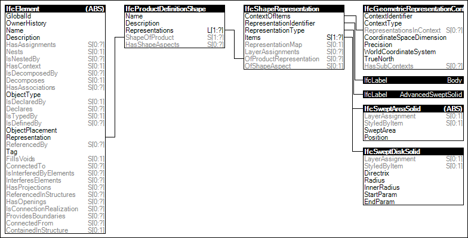

Link to this page
Link to this pageThe Body AdvancedSweptSolid Geometry is the representation of the 3D shape of a product by swept solid models, including advanced sweeping operations, such as sweeping along any directrix and tapering.
The following attribute values for the IfcShapeRepresentation holding this geometric representation shall be used:
Figure 46 illustrates an instance diagram.
 |
Figure 46 — Body AdvancedSweptSolid Geometry |